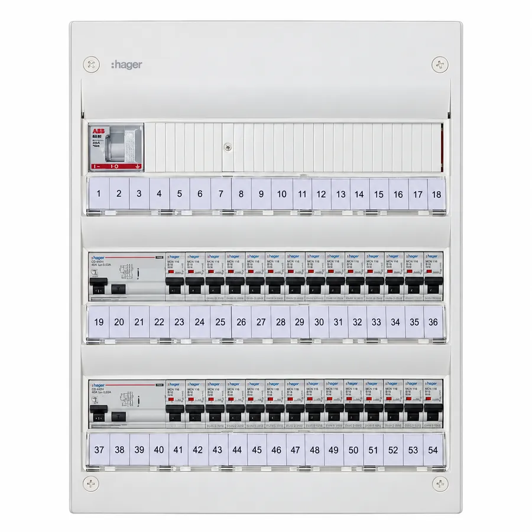

Elcentral 27 säkringar
Byte till komplett elcentral med 27 säkringar och 2 jordfelsbrytare. Välj pris med eller utan ROT-avdrag.
Flera alternativ finns. Kontakta oss om rätt utförande och slutligt pris.
Om produkten
Elcentral 27 säkringar – platsbyggd och anpassad för din villa
Det här är inte en färdig standardcentral som vi bara skruvar upp. Vi bygger centralen på plats och anpassar den efter den befintliga elanläggningen, kabelinföringen och det utrymme som finns i just din villa.
Bilderna är därför exempelbilder. Den färdiga centralen kan se annorlunda ut beroende på hur de befintliga kablarna kommer in, hur många grupper som finns och hur installationen är uppbyggd.
Vi bygger centralen efter förutsättningarna på plats
I äldre villor kan kablarna komma in från flera håll och det är inte alltid lämpligt att ersätta den gamla centralen med en enda standardkapsling. Därför kan vi till exempel montera två separata centraler bredvid varandra eller två 2×18-centraler ovanför varandra. Vi väljer den lösning som ger en säker, tydlig och servicevänlig installation med minsta möjliga påverkan på befintliga kablar.
Flera jordfelsbrytare ger bättre driftsäkerhet
Vi bygger centralen med normalt 3 jordfelsbrytare. Grupperna fördelas mellan jordfelsbrytarna så att inte hela huset blir strömlöst om en jordfelsbrytare löser ut. Med två jordfelsbrytare kan en del av anläggningen fortsätta vara i drift om den andra löser ut. I de större centralerna använder vi normalt tre jordfelsbrytare för ytterligare uppdelning och bättre driftsäkerhet.
Varje jordfelsbrytare är normalt 30 mA och övervakar de grupper som är anslutna till just den jordfelsbrytaren. Två jordfelsbrytare innebär alltså inte en gemensam gräns på 60 mA – varje jordfelsbrytare arbetar självständigt med sin egen 30 mA-nivå. Fördelen är att anläggningen delas upp i flera sektioner, vilket minskar risken att ett fel släcker hela huset.
Vad gör en jordfelsbrytare?
En jordfelsbrytare kompletterar säkringarna. Säkringarna skyddar främst mot överbelastning och kortslutning, medan jordfelsbrytaren känner av om ström tar en annan väg än den ska. Vid ett tillräckligt stort läckage bryter den snabbt strömmen och ger ett viktigt extra skydd mot elolyckor och brand.
Detta ingår
- Demontering av befintlig elcentral
- Platsbyggd och anpassad ny elcentral
- Huvudbrytare
- Normalt 3 jordfelsbrytare
- 27 automatsäkringar enligt centralens utförande
- Fördelning av grupper mellan jordfelsbrytarna
- Installationsmaterial
- Montering, inkoppling och kontroll av den nya installationen
- Behörig elektriker
Observera:
Det ingår inte felsökning i elsystemet vid eventuella fel i den befintliga anläggningen. Installationen avser enbart utbyte av befintlig elcentral.